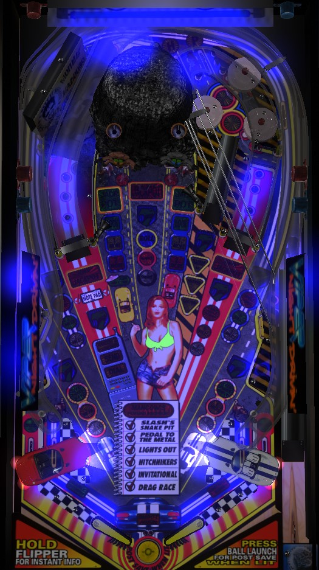

Not to be confused with Viper (Stern Electronics, 1981).
The biggest and most efficient points on Viper Night Drivin' come from multiball, which is started by shooting the locks on either side of the center ramp the number of times shown on the playfield. In multiball, single jackpot is the center ramp; then, relock 2 balls within 15 seconds of each other for double jackpot; then, shoot the left and right ramps within 15 seconds of scoring double jackpot for super jackpots. When not in multiball, every 3rd shot to each orbit awards a Viper letter; spell Viper to raise all base jackpots by 2,000,000.
By default, Viper Night Drivin' includes Glo-Balls rather than regular pinballs. These Glo-Balls are an ugly shade of yellowish-green rather than a typical silver steel pinball, and they glow under the black light used by the game during certain modes. The Glo-Balls are also slightly lighter than normal pinballs by weight and are affected more than normal by slingshots and pop bumpers. These traits cause Viper Night Drivin' to play faster and more unpredictably than other games of its era.
The game can support being played with normal pinballs as well.
At the start of the ball, one of the two H-P top lanes will flash. Lane change with the right flipper alternates which lane is flashing. Press the launch button to fire the ball; if it proceeds to go through the flashing top lane, you score the skill shot, which instantly awards 2x bonus multiplier. Unfortunately, it is common for the launch to fire the ball so fast that it bounces off the post at the top of the orbit and comes down the right side, making the skill shot impossible.
During gameplay, roll through an unlit top lane to light it. Lighting both top lanes advances the bonus multiplier by 1 up to its maximum of 10x. Advancing the multiplier to 9x lights the center ramp for extra ball. On some versions of the game code, the game may not give you credit for a top lane unless the ball hits a pop bumper immediately afterward. Balls always exit the pop bumper area down the right orbit.
Lock balls by shooting the saucers located on either side of the center ramp. For the first multiball, both locks are lit right away. For the second multiball, it takes 1 shot to each saucer to qualify the lock first; this is increased to 2 shots for the third multiball and 5 shots for all multiballs starting with the 4th. Inserts on the playfield show when lock is lit or when there are only 1 or 2 more shots needed to light the lock. Locking a ball in both saucers starts multiball.
Despite only needing to lock 2 balls to start multiball, multiball always starts as a 4-ball round. In multiball, the only available features are the H-P top lanes and jackpots. The jackpot sequence starts at the center ramp. Base jackpot value starts at 5,000,000 points; this is increased by 2,000,000 points with each complete spelling of Viper, and every 3rd shot to each orbit during single-ball play awards a Viper letter. If there is a maximum value for the base jackpot, it is at least 11,000,000 points. In multiball, first shoot the center ramp to score a jackpot, which is step 1. Step 2 is to relock two balls at the lock saucers to score a double jackpot; you must relock the second ball within 15 seconds of relocking the first ball, or the first relocked ball will be kicked back out. Successfully relocking both balls and scoring the double jackpot completes step 2. Step 3 is super jackpots, which are actually triple jackpots: two are available, one on each of the left ramp and right ramp. The super jackpots are only available for 20 seconds. If you do not collect one or both super jackpots, you go back to step 2 and need to recollect the double jackpot to have another chance. If you do collect both super jackpots, you return to step 1, but with 3 center ramp jackpots required to advance to step 2 rather than just one. This sequence continues until there is only one ball in play.
Multiball starts with 4 balls and a rather generous ball saver with the center post raised. If multiball ends with 0 jackpots earned, a multiball restart is available by shooting either lock saucer within 12 seconds after multiballs ends. Restarting multiball in this way comes with only 2 balls instead of 4 and absolutely zero ball save or center post time.
Shooting the left ramp when it is lit for Note Pad starts the currently selected major mode, as indicated on the center of the playfield. There are 6 main modes, followed by a 7th wizard mode. If the left ramp is not currently lit for Note Pad, you need to collect Miles to light it. Orbit shots, the right ramp, and the lower left and right standup targets rotate between awarding 2 miles, 5 miles, and a third award which varies by shot (discussed in detail later). To light Note Pad, you'll need to reach the next multiple of 20 miles by shooting these shots. Any shot that awards any number of Miles scores 500,000 points. Miles can only be earned when no major mode or multiball is running. Note Pad is lit for free at the start of each ball. Pop bumpers rotate which mode is flashing, which indicates the currently selected mode. The modes are:
For reference, Mancow refers to Erich "Mancow" Muller, a divisive radio host that had a radio show out of Chicago called Mancow's Morning Madhouse from 1994 to 2018...it was popular at the time, for certain definitions of the word popular. Mancow's voice can be heard throughout the game, and is not a cow-themed easter egg like was present in many Williams games of the 1990s.
There cannot be multiple modes running at once. A mode cannot be started during multiball. If multiball is started during a mode, the mode will pause until multiball ends.
In single ball play, each orbit independently rotates between awarding 2 Miles, 5 Miles, or Spell Viper. Shooting an orbit collects and rotates the lit value. Spell Viper awards a letter in Viper: completing the word adds 2,000,000 points to the base jackpot value for the rest of the game.
When the left ramp is not lit for anything else, shooting it awards Dial, then Send, then Mancow's Mystery Caller. The Mystery Caller seems to always award 1,000,000 points, Start Multiball, or Start Raccoons (discussed later in the guide).
If you complete the Hitchhikers major mode and then play a multiball, you get bonus Alien Abduction points for shooting the left lock saucer 3 times within 20 seconds after the multiball ends. I believe you get 1,000,000 points for starting this secret mode, then 3,000,000, 5,000,000, and 7,000,000 for the three shots, but this needs to be verified.
Making either in lane briefly lights the opposite Raccoon target immediately adjacent to the center ramp. Shoot a lit Raccoon target with a wobbling toy to score a Raccoon. Score 4 Raccoons to start the Raccoons mode. In this mode, shoot each Raccoon target 3 times within 25 seconds; the first hit scores 100,000, and each hit scores 50,000 more than the last. (This is basically TROLLS! from Medieval Madness.) Completing the Raccoons mode scores 1,000,000 points, and the first completion also awards an extra ball. Each Raccoons mode requires scoring one more Raccoon than the previous mode playthrough required.
Raccoons can be stacked with any major mode or multiball, as long as Raccoons was started first; this is basically the only stacking available anywhere in the game.
When it is not lit for anything else, the center ramp progresses the Combo shot. Shoot the center ramp to score Snake for 100,000 points; shoot it again with no time limit to score Rumble for 200,000 points; shoot it again with no time limit to score Roll, which starts the combo. You have one chance to immediately shoot the right ramp; if you do, you score the Combo, which lights the left in lane. Making the left in lane when lit starts Double Scoring for 20 seconds, which affects all playfield scoring and can even be cashed in during a major mode or multiball. Point values listed in this guide assume Double Scoring is not running.
This lane between the right lock and the right ramp feeds the pop bumpers. The first shot to this lane scores Caution for 250,000 points; the second scores Warning for 500,000 points; the third scores Bridge Out, which can be worth 1,000,000 points, 10,000,000 points, or an extra ball, and I have no idea what determines the award you get. After earning a Bridge Out award, the next shot to this lane scores Caution again, and the cycle repeats.
Shots to the right ramp score and rotate the value between 2 Miles, 5 Miles, and Light Triple Scoring. Triple Scoring is started at the right in lane (meaning it's cashed in right away, since the right ramp feeds the right in lane); it only applies to the next 1 shot that you make, and cannot be activated during a mode or multiball, make it significantly more worthless than its double scoring counterpart.
Each lower standup target independently rotates its value between 2 Miles, 5 Miles, and Light Post Save. Collecting Light Post Save causes the center post to light up, but not actually raise. Press the launch button when the post is lit to raise it for a few seconds, temporarily blocking off the center drain (however, a ball can still drain between a raised center post and a raised flipper). The center post is also briefly automatically raised at the start of multiball, the start of Mancow's Morning Madhouse, and each time a Raccoon is scored.
Viper Night Drivin' has a conventional in/out lane setup. Out lanes can be lit for Special; I'm not sure how. In lanes can be lit for Double Scoring (left, by completing the center ramp to right ramp combo sequence) or 1 shot Triple Scoring (right, by making 3 right ramps). The center post between the flippers is described above.
Bonus is calculated as 100,000 points per standup target hit that awarded Light Post Save on that ball, plus 100,000 points per Viper letter earned on that ball, plus 100,000 points per Raccoon scored on that ball (not including Raccoons mode), plus 20,000 points per Mile earned in the game so far, all multiplied by the bonus multiplier earned from the skill shot or H-P top lane completions. If you have no Miles and scored no bonus-affecting shots, you get a pity end of ball bonus of 100,000 points times multiplier. Bonus is usually not very valuable. There is no mid-ball bonus collect, and bonus multiplier is always reset for every ball.
| If you need... | Try... |
| 500,000 points | ...shooting any major shot, especially if it is lit for Miles. |
| 1,000,000 points | ...looping the center ramp a few times, or starting a major mode if Note Pad is lit. |
| 5,000,000 points | ...starting multiball and earning the initial center ramp jackpot, or starting a mode with the intent of completing it. |
| 20,000,000 points | ...completing a major mode or two, or starting multiball and earning at least one initial jackpot and at least one double jackpot. |
| 50,000,000 points | ...starting multiball and trying to get all the way to the super jackpots. |
| 100,000,000 points or more | ...spelling Viper a few times to raise the base jackpot value and then starting multiball to earn a few super jackpots, or qualifying -> starting modes and timing them out with the intention of making it to Mancow's Morning Madhouse wizard mode and milking the millions-plus on every shot for all it's worth. |